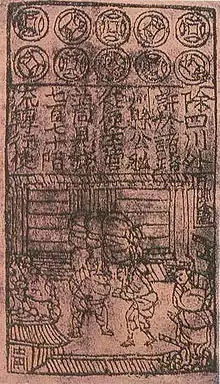

Quran 18:19 · Surah Al-Kahf · 610 CE
In 7th-century Arabia, every merchant paid with metal coins. What is the precise Arabic word the Quran uses in 18:19 for the means of payment - and what does it mean?
The Quran mentions paper money as if already known. Historians record the Jiaozi as the first documented paper currency. What does this gap tell us?

The Bible's Book of Chronicles (1 Chr 29:7) says King David collected "10,000 gold darics" for Solomon's temple. Why is this significant when compared to the Quran's reference to paper money?